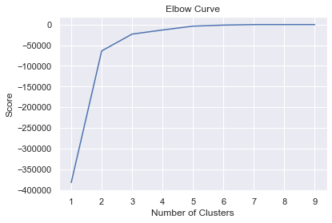
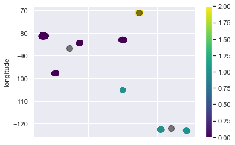

Clustering GPS Coordinates of Coffee Shops
Group-4 Final project

K-mean is used to identify optimal number of clusters

Three clusters were used as optimal number of clusters with center of clusters:
(47.01608364, -122.04168551)
(42.36606526, -71.09138863)
(32.26496969, -86.68173042)